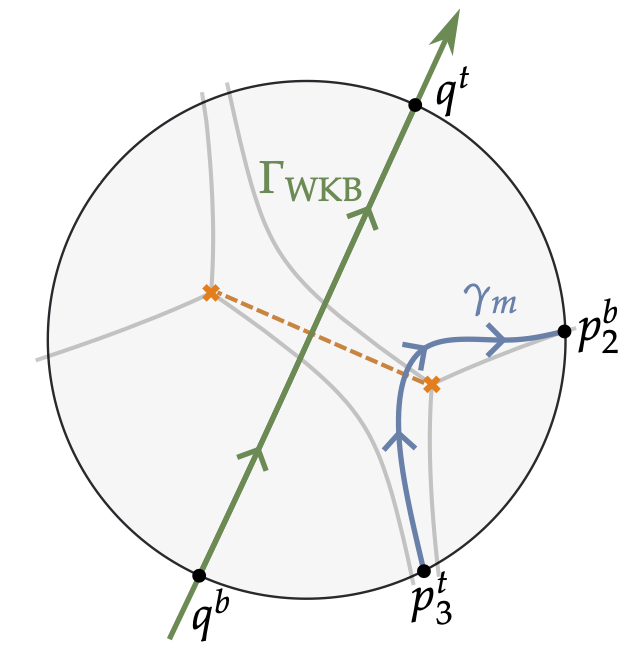
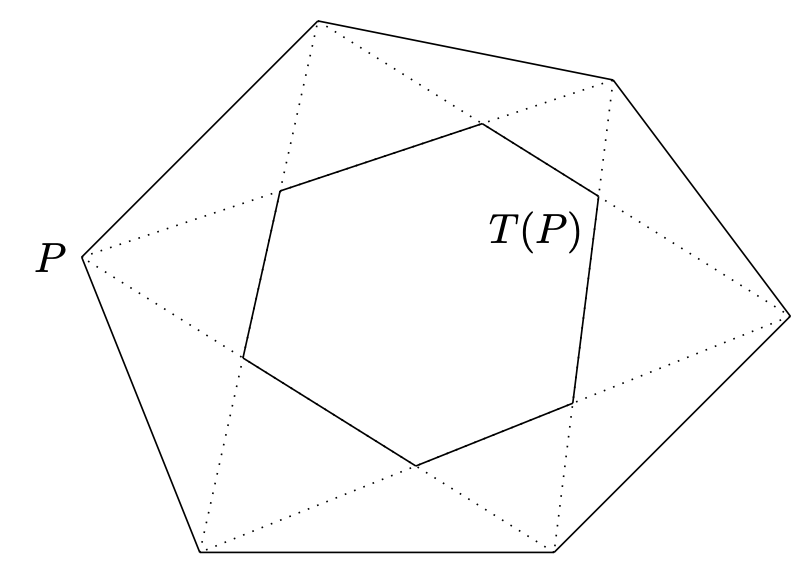

Research interests

I am generally interested in differential, complex, and symplectic geometry.
More specifically, my research involves:
- moduli of Higgs bundles and flat connections
- spectral networks and abelianization
- Stokes phenomena
- integrable systems
Papers
[expand all]
[collapse all]
Preprints
- Interpreting the Ooguri-Vafa symplectic form à la Atiyah-Bott
[+abstract]
Gaiotto, Moore, and Neitzke predicted that the hyperkähler Ooguri-Vafa space $\mathcal{M}^{\mathrm{ov}}$ should provide a local model for Hitchin moduli spaces near the discriminant locus.
To this end, Tulli identified $\mathcal{M}^{\mathrm{ov}}$ with a certain space of framed Higgs bundles with an irregular singularity.
We extend this result by identifying the Ooguri-Vafa holomorphic symplectic form with a regularized version of the Atiyah-Bott form on the associated space of framed connections.
We also prove the analogous statement for the corresponding semiflat forms.
arXiv:2409.19789
Publications
- Continuous limits of generalized pentagram maps
[+abstract]

We provide a rigorous treatment of continuous limits for various generalizations of the pentagram map on polygons in $\mathbb{RP}^d$ by means of quantum calculus. Describing this limit in detail for the case of the short-diagonal pentagram map, we verify that this construction yields the $(2,d+1)$-KdV equation, and moreover, the Lax form of the pentagram map in the limit is proved to become the Lax representation of the corresponding KdV system.
With Romain Speciel. J. Geom. Phys. 167 (2021).
arXiv:2010.00723